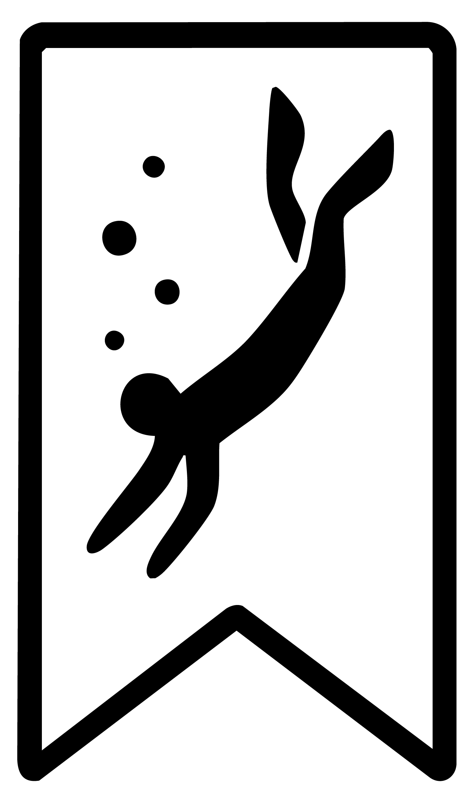

 The BookmarkDive blog
A curated trail of the resources, tools, and reflections shaping how I think about data, systems, and building things that last.
Every post starts with something I’ve saved (a newsletter, a code snippet, a talk, a blog post) and ends with a short reflection on why it resonated, what I took away, or how I might use it. This series helps me stay grounded in my learning and make space for slow, intentional exploration, even when life and work move fast.
Some entries are technical. Some are reflective. All of them mark a breadcrumb in my journey toward better data practice, deeper thinking, and more sustainable growth.
| Entry | Date |
|---|---|
| 📌 How to Build a Data Analyst Portfolio: Tips for Success | Aug 1, 2025 |
| 📌 Data Science Hangout with Jenny Bryan, Senior Software Engineer at Posit | Jul 31, 2025 |
| 📌 Using AI Right Now: A Quick Guide | Jul 28, 2025 |
| 📌 10 Things to Unlearn to Truly Grow in Your Career | Jul 23, 2025 |
| 📌 Git Stash for Newbies | Jul 16, 2025 |
| 📌 The Data Rescue Project | Jul 9, 2025 |
| 📌 How to Document Everything at Work (Without Being Asked) | Jul 2, 2025 |
| 📌 The Best Programmers I Know | Jun 25, 2025 |
No matching items